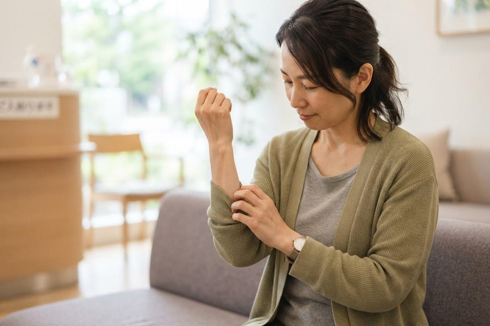

急に体にかゆい発疹が出て、しばらくすると消えます。じんましんでしょうか？
A. 回答かゆみを伴う赤く盛り上がった発疹（膨疹）が急に出て、数十分から長くても24時間以内に跡を残さず消える、という経過は、じんましん（蕁麻疹）に見られる特徴とされています。出た場所が移動したり、朝は消えていたのに夕方また出たりすることも珍しくありません。発症から6週間以内におさまるものを急性じんましん、6週間を超えて出たり消えたりを繰り返すものを慢性じんましんと呼び分けるのが一般的です。多くの場合は命に関わるものではありませんが、まれにアナフィラキシーの一症状として現れることがあるため、下記の「受診の目安」をまずご確認ください。

じんましんの一般的な原因
じんましんは、皮膚の中の肥満細胞という細胞からヒスタミンなどの物質が放出され、血管から水分がしみ出すことで起こると考えられています。きっかけには次のようなものが挙げられています。
- 感染症：かぜなどのウイルス感染や細菌感染をきっかけに出ることがあり、急性じんましんではよく見られるとされています。
- 食べ物・薬：特定の食品や薬の使用後に出るもので、原因がはっきりしている場合はアレルギー反応が関わっていることがあります。
- 物理的な刺激：こすれ・圧迫・寒冷・温熱・日光・発汗などの刺激で誘発されるタイプがあります。
- 疲労・ストレス・睡眠不足：直接の原因というより、症状を出やすくする要因になる場合があるとされています。
- 原因が特定できないもの（特発性）：実際には、はっきりした原因がわからないものが多くを占めるとされ、とくに慢性じんましんでは原因が特定できないことが多いと報告されています。
「何か悪いものを食べたのでは」と原因探しに時間をかけるより、まずは症状を落ち着かせることを優先する、という考え方が一般的になっています。
急性じんましんと慢性じんましんの違い
| 項目 | 急性じんましん | 慢性じんましん |
|---|---|---|
| 期間の目安 | 発症から6週間以内 | 6週間を超えて続く |
| 出方 | 数日〜数週間で落ち着くことが多い | ほぼ毎日〜週の何日か、出たり消えたりを繰り返す |
| 原因 | 感染症や食べ物・薬などがきっかけになることがある | 特定できないことが多いとされる |
| 考え方 | 誘因を避けつつ経過をみる | 症状のコントロールを続けながら、落ち着く時期を待つ |
受診の目安
じんましんそのものより、一緒に出ている症状のほうが重要です。次の項目に当てはまる場合は、すぐに行動してください。
判断に迷われるときは、救急安心センター事業「＃7119」（岡山県内で利用できます）にご相談いただけます。総務省消防庁の「全国版救急受診アプリ（Q助）」も目安になります。
すぐに受診を検討してください
- じんましんに加えて、息苦しさ・声のかすれ・のどが締まる感じ・嘔吐・血圧低下・意識がもうろうとする、といった症状がある場合は、アナフィラキシーの可能性があります。当院にご連絡いただくより先に、直ちに119番で救急要請してください。横になり、足を少し高くして救急隊を待つ姿勢がすすめられています。
- まぶた・くちびる・舌が急に大きく腫れてきた
- 食べ物や薬、ハチ刺されのあと、短時間で全身に発疹が広がってきた
- 過去にアナフィラキシーを起こしたことがあり、同じような出方をしている
- ぐったりしている、顔色が悪い、冷や汗が出ている（お子さんでは特に注意）
早めの受診をおすすめします
- かゆみで眠れない、仕事や家事に支障が出ている
- 数日たっても良くならない、または毎日のように出る
- 出たり消えたりが6週間以上続いている（慢性じんましんの可能性）
- 発疹が24時間以上同じ場所に残る、跡が茶色く残る、痛みを伴う（別の皮膚の病気が背景にある場合もあります）
- 発熱・関節の痛み・体重減少など、皮膚以外の症状を伴う
- 市販薬を使ってもおさまらない、使い続けている
診察前に確認しておくと役立つこと
- いつから出はじめたか（初めて出た日）
- 1回の発疹が消えるまでの時間（24時間以内かどうか）
- 出やすい時間帯（夜だけ、入浴後など）
- 直前に食べたもの・飲んだ薬・サプリメント
- こすれ・汗・寒さ・日光などとの関係
- ほかのアレルギー（花粉症・食物・薬）の有無
当院での対応と、受診の実務的なご案内
いなだ医院はアレルギー科・内科・小児科を標榜しており、じんましんのご相談も承っています。診察ではまず経過と誘因の聞き取りを行い、発疹の性状を確認したうえで、内服による治療のご相談や、生活上の注意点をご説明します。原因が疑われるものがある場合や、ほかの病気が背景にないかを確かめたい場合には、血液検査などをご提案することがあります。皮膚の症状が強い場合や、専門的な精査が望ましいと判断した場合には、皮膚科など適切な医療機関をご紹介します。
- 予約：予約がなくても診療時間内であれば受診いただけます。かゆみが強いときは早めにお越しください。
- 診療時間：月〜土は朝7:00〜12:00、月〜金は14:30〜18:30（土曜は14:30〜17:30）。朝7時から診療していますので、出勤前の受診も可能です。
- 診察にかかる時間：問診と診察で概ね10〜15分程度が目安です。採血を行う場合は、その分の時間が加わります。
- 費用：じんましんの診察・検査・治療は保険診療の対象となります。金額は検査内容によって変わりますので、詳しくはお問い合わせください。
- 持ち物：健康保険証（またはマイナ保険証）、お薬手帳、市販薬を使っている場合はその箱やパッケージ。
- 駐車場：無料22台。両備バス「西中学校前」より徒歩3分、ニシナ玉島柏島店の西隣りです。
症状が出たときは写真を撮っておいてください
じんましんは受診する頃には消えていることがとても多く、「診察室では何も出ていない」という状況になりがちです。発疹が出ている間にスマートフォンで写真を撮っておくと、大きさ・形・広がり方が確認でき、診察の大きな手がかりになります。明るい場所で、全体が写る1枚と、発疹に近づいた1枚を撮っておくと役立ちます。撮影した日時と、そのときの状況（食後、入浴後、夜中など）をメモしておくとさらに有用です。
受診時に伝えていただきたいこと
- いつから、どのくらいの期間続いているか（6週間を超えているかどうか）
- 1つの発疹が消えるまでにどれくらいかかるか
- どんなときに出やすいか（食後・入浴後・運動後・夜間など）
- 服用中の薬、市販薬、サプリメントの有無
- 息苦しさ・のどの違和感・腹痛など、皮膚以外の症状の有無
参考にした情報
くり返すじんましん、かゆみでお困りの方はご相談ください。朝7時から診療しています。
最終更新：2026年8月26日